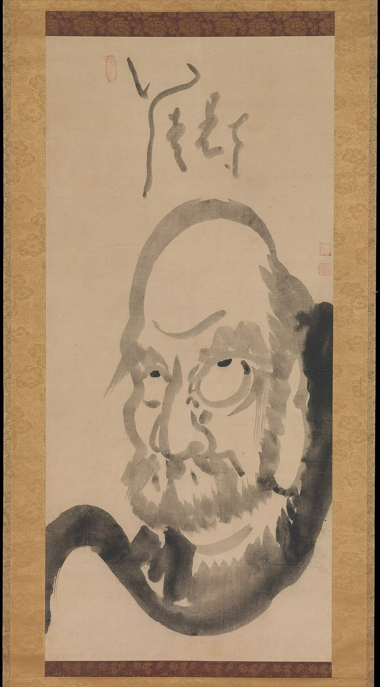

The one intention
A mirror, never a command
The I Ching's history is layered: a Zhou-dynasty (c. 1046–256 BCE) divination manual of hexagram and line judgments, overlaid across centuries with commentary (the "Ten Wings"), popularized in the West through translation (this library's 64-hexagram text is James Legge's public-domain English of 1882). Each grammar here is presented in its own terms — the classical judgments as classical judgments, the contemplative practice as a practice, the cross-lens synthesis as one synthesis among possible ones — never as this library's verdict on what a hexagram objectively means.
Where a source's provenance is genuinely uncertain, this library hedges rather than invents: unverified claims are marked as such, and a lens grammar's more speculative claims (Human Design's 1987 origin, for instance) are named plainly as speculative in the grammar's own description. Read the Three Lenses reading →